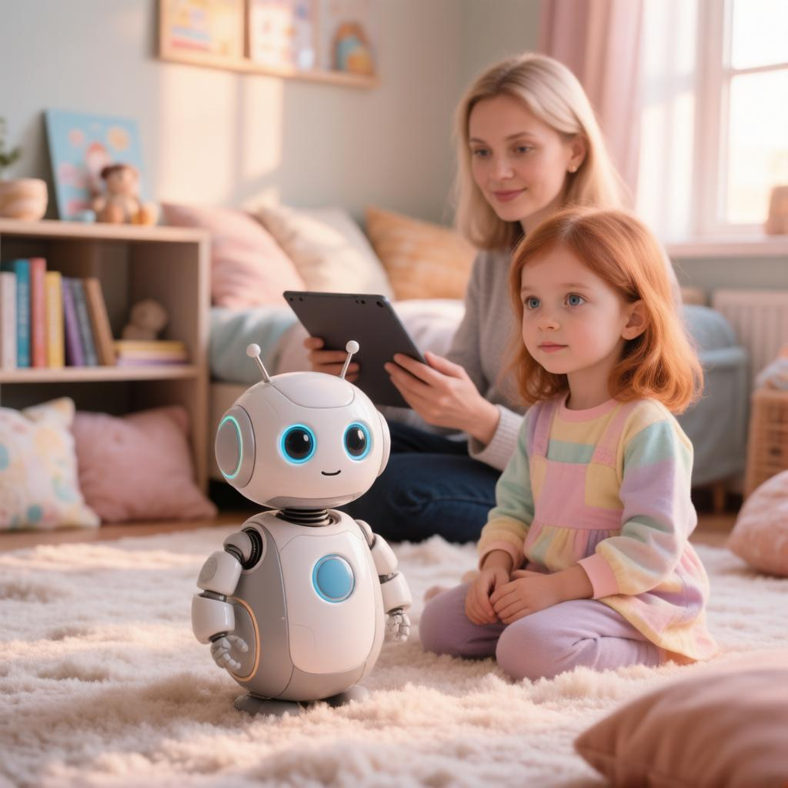

Независимый исследователь Сэмми Аздуфаль нашёл уязвимости в ИИ-роботах Eilik и Eiliko компании Energize Lab: 15 октября 2026 года бюллетень AHA! опубликовал 9 уязвимостей, 4 из них критические. По данным исследователя и The Verge, разговоры с роботом хранились открытым текстом на серверах в Пекине, из них собирались профили детей, а ответы робота можно было изменить удалённо; производитель по существу не ответил.
Тексты постов
Telegram995 / 950
**Карманный ИИ-робот Eiliko: куда уходят разговоры ребёнка 🔓** Исследователь Сэмми Аздуфаль изучил роботов Eilik и Eiliko компании Energize Lab (Китай). 15 октября бюллетень AHA! описал 9 уязвимостей, 4 — критические. По данным исследователя, всё сказанное роботу хранится открытым текстом на серверах в Пекине, а ночью сервер собирает из разговоров профиль: имя ребёнка, возраст, адрес, родственников. По данным The Verge, исследователь удалённо изменил ответы робота журналиста, и тот начал говорить неприемлемые для детей вещи. Производитель по существу не ответил. По данным исследователя, на 13 октября закрыта лишь часть уязвимостей. Доказательств, что данные массово скачали посторонние, не опубликовано. Совет: до покупки ИИ-игрушки узнайте, где её сервер и работает ли она без облака. Объясните ребёнку, что адрес, фамилию и «секреты» игрушке не рассказывают. Источник: бюллетень AHA!, The Verge https://takeonme.org/cves/multiple-energizelab-eilik-eiliko-platform-vulnerabilities/
MAX870 / 1200
**ИИ-робот Eiliko: разговоры детей — на серверах в Китае, по данным исследователя 🔓** Исследователь Сэмми Аздуфаль изучил карманного робота Eiliko компании Energize Lab. 15 октября бюллетень AHA! описал 9 уязвимостей, 4 — критические. По данным исследователя, разговоры с роботом хранятся открытым текстом в Пекине, а из них собирается профиль ребёнка: имя, возраст, адрес. По данным The Verge, ответы робота удалось изменить удалённо. Производитель по существу не ответил. Доказательств, что данные массово скачали посторонние, не опубликовано. Совет: если у ребёнка есть игрушка с ИИ, узнайте, где её сервер, и проверьте, работает ли она без облака. Исследователь советует не рассказывать Eiliko ничего личного и отключить облачные разговоры. Источник: бюллетень AHA!, The Verge https://takeonme.org/cves/multiple-energizelab-eilik-eiliko-platform-vulnerabilities/
ВКонтакте1456 / 1500
Ребёнок делится с игрушкой секретами, а они, по данным исследователя, лежат открытым текстом на сервере в Пекине. Разбираем историю карманного ИИ-робота Eiliko 🔓 Eiliko — робот китайской компании Energize Lab, который разговаривает голосом через облачную нейросеть. Продаётся в том числе на Amazon, по данным итальянского издания iGizmo — для детей от 3 лет. 15 октября организация AHA!, которая регистрирует уязвимости, описала 9 таких «дыр» робота, 4 — критические. По данным исследователя Сэмми Аздуфаля, по ночам сервер собирает из разговоров профиль ребёнка: имя, возраст, адрес, родственники. При этом в политике конфиденциальности компании сказано, что голосовые записи удаляются сразу после обработки. По данным The Verge, исследователь удалённо изменил «память» робота журналиста, и тот начал говорить неприемлемые для детей вещи. Производитель по существу не ответил. По данным исследователя, на 13 октября закрыта лишь часть уязвимостей. Доказательств, что данные массово скачали посторонние, не опубликовано. Наш совет: до покупки ИИ-игрушки узнайте, в какой стране её сервер и работает ли она без облака. Научите ребёнка не рассказывать игрушке адрес, фамилию и «секреты». И помните: игрушка — не замена живому разговору с вами. А вы знаете, где хранятся разговоры игрушки вашего ребёнка? Источник: бюллетень AHA!, The Verge #ИИигрушки #умныеигрушки #детиитехнологии #приватность #ИИигрушки #умныеигрушки #детиитехнологии #приватность